FTP設定¶
FTPのインストール¶
本製品出荷時では、FTPはインストールされておりません。そのため、WEB UIの「メンテナンス」→「機能拡張」タブからFTPをインストールしてください。
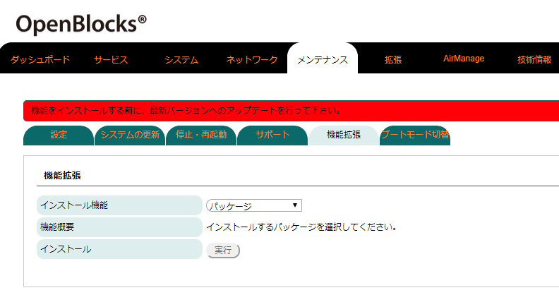
WEB UIの「メンテナンス」タブを選び、さらに「機能拡張」タブをクリックすると機能拡張用のパッケージを選択することができます。
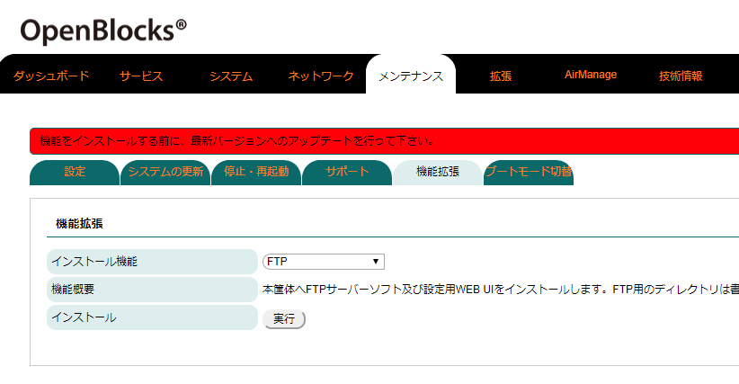
インストール機能のリストから「FTP」を選択します。
その後、インストールの「実行」ボタンを押し、インストールを行ってください。
尚、インストール完了後には反映を行うため、本体再起動が必要となります。そのため、「メンテナンス」→「停止・再起動」から本製品の再起動を行ってください。
FTPサーバー起動設定¶
FTPのインストールが完了している場合、WEB UIの「拡張」→「FTP」タブにFTPの項目が表示されます。
使用設定を「使用する」に設定し、保存することでFTPサーバーとして扱うことができます。
FTP用ユーザーとして"obsftpuser"を用意しております。デフォルトパスワードは"0BSI0TF2P"(パスワードのOは数字の0です)ですが、WEB UIから設定することでパスワードは変更されます。
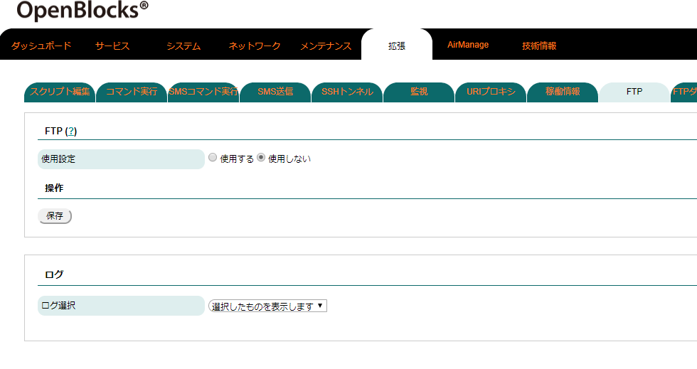 |
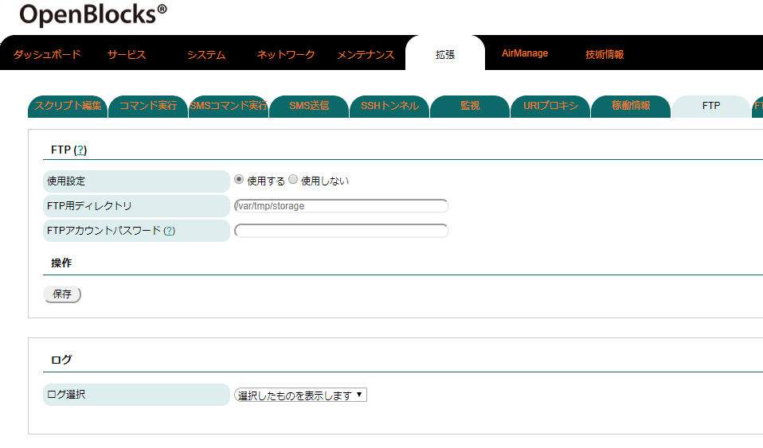 |
FTP |
|
|---|---|
項目 |
説明 |
使用設定 |
FTPの使用設定を行います。FTPを使用する場合には、「使用する」を選択してください。 |
FTP用ディレクトリ |
FTPサーバーログイン時のルートディレクトリのパスを設定します。尚、事前にディレクトリ用意し ておく必要がある為、「システム」→「ファイル管理」タブ等にてディレクトリを作成してくださ い。 |
FTPアカウントパスワード |
FTP用ユーザー"obsftpuser"のパスワードを設定できます。 |
設定完了後、保存ボタンを押すことによりFTPが起動・停止します。
本機能での書き込み等についてはストレージ寿命を縮めることが想定されます。
そのため、ディレクトリパス先については外部ストレージやtmpfs等の本体ストレージに影響のない場所を推奨いたします。
また、FTPサーバー機能を使用する状態にて、保存ボタンを押した場合にて、フィルターが解放されていない場合には、解放確認のポップアップが表示されます。また、解放ポリシー設定ポップアップが出ますので、設定したいポリシーのボタンを押してください。
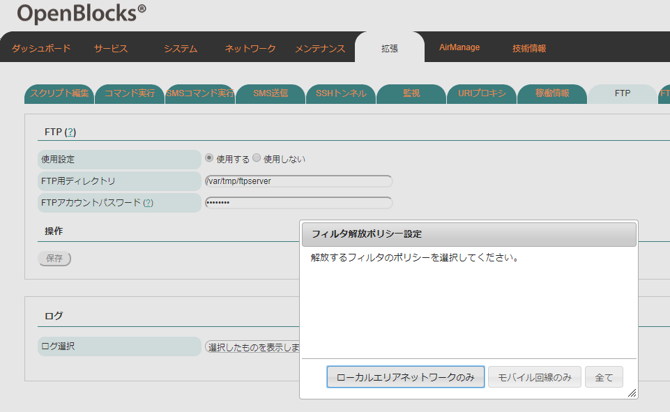
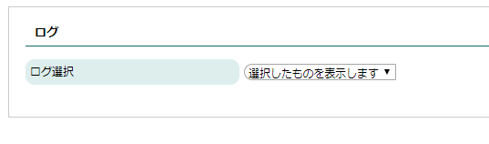 |
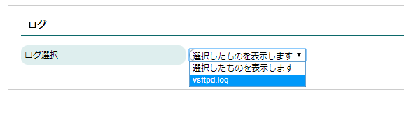 |
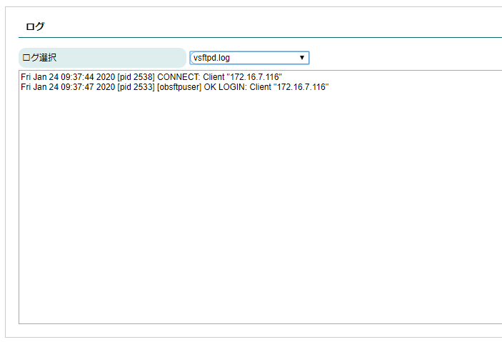 |
ログ |
|
|---|---|
項目 |
説明 |
ログ選択 |
ログ選択フォームから該当のログファイルを選択することにより、FTPサーバー機能のログの確認が 行えます。 本機能のログは対象ファイルの末尾数十行分のみとなります。 そのため、全内容を確認する場合にはサポートデータを取得しご確認ください。 |
FTPパケットフィルタについて¶
FTPのインストールが完了しFTPサーバー機能を用いる場合、ファイル共有用のプロトコル通信の為FTPのフィルターを開放する必要があります。FTPサーバー機能を使用しフィルターの開放設定を行っていない場合には、WEB UIの「システム」→「フィルター」タブにてフィルターを開放してください。
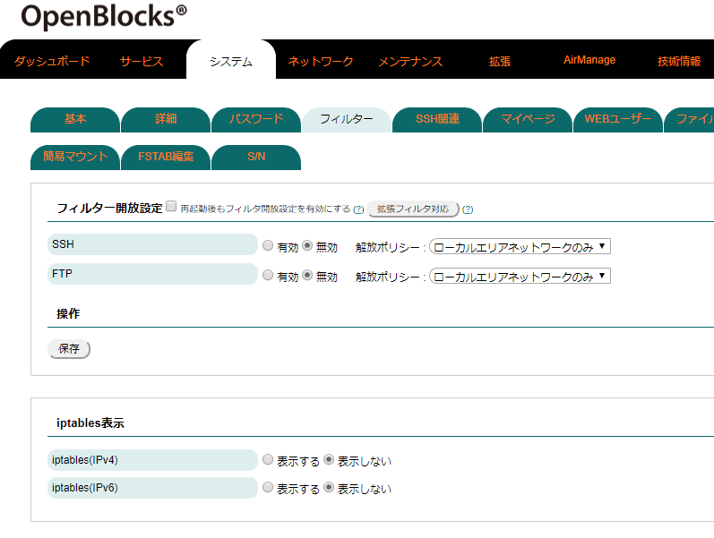
デフォルトではFTP用のアクセスはできないようにフィルターが適用されています。
"有効"に設定し、保存ボタンを押してください。
FTPダウンロード設定¶
FTPのインストールが完了している場合、WEB UIの「拡張」→「FTPダウンロード」タブにFTPアップロードの項目が表示されます。
本機能は、対象のFTPサーバーに対して5分毎に接続を行いアクセスパスに存在するファイルが前回と同一のものかを確認を行います。ファイルが異なる場合や新規にファイルが置かれている場合には、OpenBlocks本体へとファイルのダウンロードを行います。
使用設定を「使用する」に設定し保存及び各設定を行うことで自動でファイルがFTPサーバーからダウンロードされます。
※自動ダウンロードを行うため、ダウンロードするファイルのサイズや本体のストレージ容量はチェックしておりません。そのため、大容量のファイルが置かれる場所に対してFTPのアクセスは行わないでください。
※本機能では、FTPプロトコルのサポートのみとなります。FTPSはサポート対象外となります。
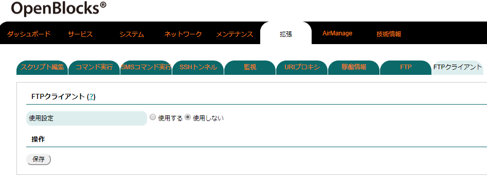 |
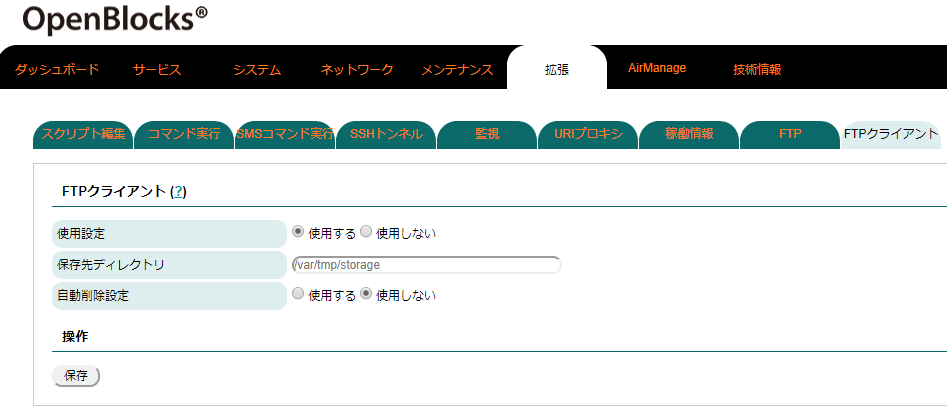 |
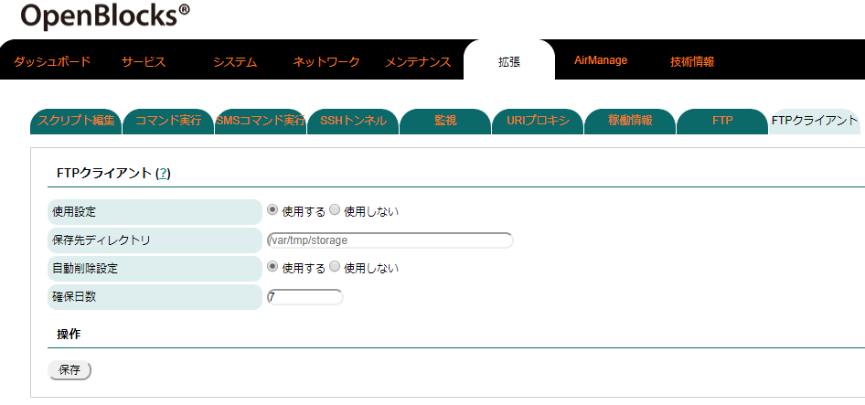 |
FTPダウンロード |
|
|---|---|
項目 |
説明 |
使用設定 |
FTPダウンロードの使用設定を行います。 FTPダウンロードとして自動でファイルをダウンロードする場合には、「使用する」を選択してくだ さい。 |
保存先ディレクトリ |
FTPダウンロードとして、接続後にファイルをダウンロードした際に保存するディレクトリの指定を 行います。 尚、保存されるファイル名は"＜接続先ホスト＞_＜ファイル名＞"また"＜接続先ホスト＞_＜修正 アクセスパス＞_＜ファイル名＞"はとなります。 ※保存ファイル名の詳細については、後述部を参照してください。 |
自動削除設定 |
FTPにてダウンロードしたファイルの内、一定期間更新等がないファイルを自動的に 削除する機能をしようするか設定します。 |
確保日数 |
自動削除設定機能にて、変更がないファイルを確保する日数を指定します。 |
保存ボタンを押すことにより、使用設定及び保存先ディレクトリが適用されます。
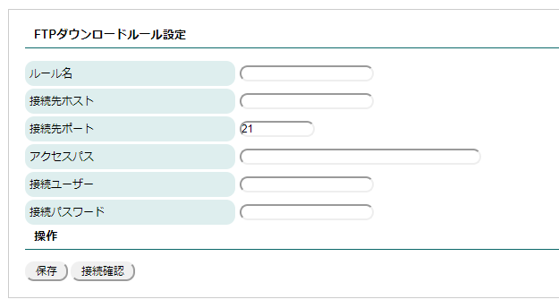 |
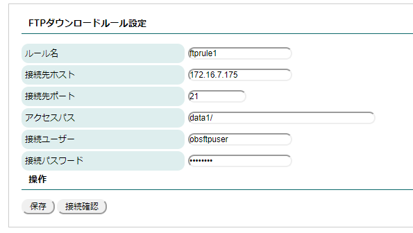 |
FTPダウンロードルール設定 |
|
|---|---|
項目 |
説明 |
ルール名 |
FTPダウンロードする際のユニークな名前を設定します。 |
接続先ホスト |
接続先のFTPサーバーのIPアドレス等の指定を行います。 |
接続先ポート |
FTPプロトコルとして接続するコントロールポートの指定を行います。 ※通常では、デフォルトの21から変更する必要はありません。 |
アクセスパス |
接続先ホストに対してログイン後におけるデータをダウンロードしたいディレクトリのパスを設定 します。 |
接続ユーザー |
FTPサーバーに接続する際のユーザー名を指定します。 |
接続パスワード |
FTPサーバーに接続する際のユーザー名に対応するパスワードを指定します。 |
保存ボタンを押すことにより、対象FTPサーバーへのダウンロード設定が適用されます。
また、接続確認ボタンにより入力中のフォーム値をもとに接続確認が行われます。接続確認結果はボタンの横に表示されます。
|
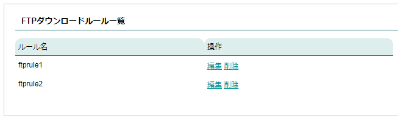 |

FTPダウンロードルール一覧 |
|
|---|---|
FTPダウンロードルール設定にて保存したダウンロードルールの一覧が表示されます。 「編集」を押すことにより、対象ルールがFTPダウンロードルール設定のフォームに自動で入力されます。 「削除」を押すことにより、対象ルールが削除されます。 |
ログ |
|
|---|---|
項目 |
説明 |
ログ選択 |
ログ選択フォームから該当のログファイルを選択することにより、FTPダウンロード機能のログの確 認が行えます。 本機能のログは対象ファイルの末尾数十行分のみとなります。 そのため、全内容を確認する場合にはサポートデータを取得しご確認ください。 |
FTPアップロード設定¶
FTPのインストールが完了している場合、WEB UIの「拡張」→「FTPダウンロード」タブにFTPアップロードの項目が表示されます。
本機能は、対象のFTPサーバーに対して5分毎に接続を行い対象ディレクトリに存在するルール該当するファイルをFTPサーバーへアップロードを行います。
尚、アップロードをおこなったファイルは自動的に削除を行います。
※本機能では、FTPプロトコルのサポートのみとなります。FTPSはサポート対象外となります。
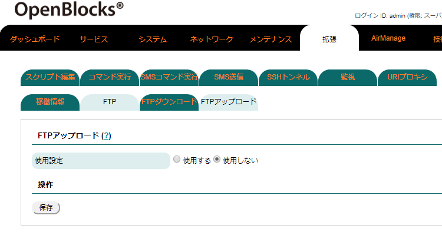 |
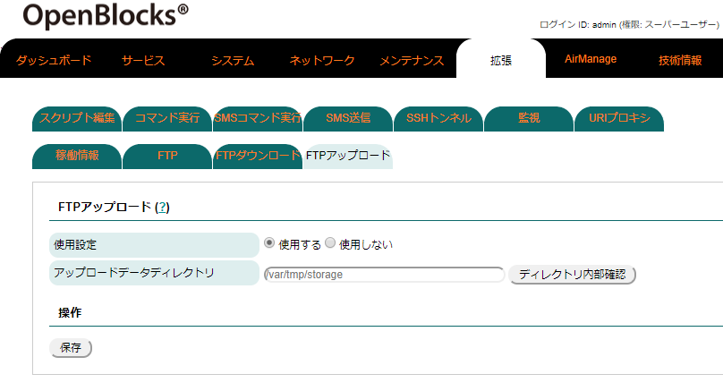 |
FTPアップロード |
|
|---|---|
項目 |
説明 |
使用設定 |
FTPアップロードの使用設定を行います。 自動でファイルをアップロードする場合には、「使用する」を選択してください。 |
アップロードデータディレクトリ |
アップロードを行うデータの格納先のディレクトリの指定を行います。 尚、ディレクトリ内部確認ボタンを押すことによりディレクトリ内部のデータの確認が行えます。 |
保存ボタンを押すことにより、使用設定及びアップロードデータディレクトリが適用されます。
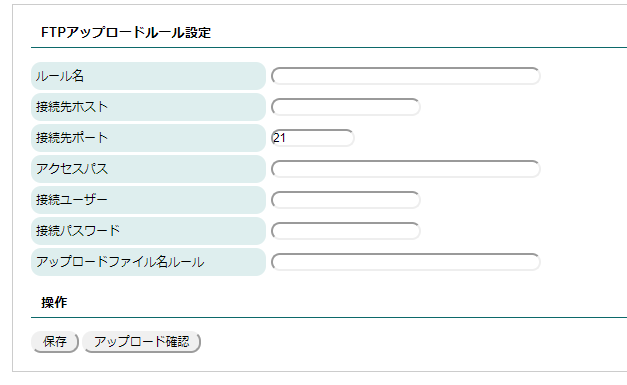 |
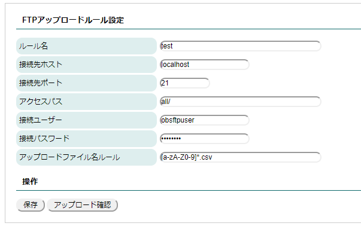 |
FTPアップロードルール設定 |
|
|---|---|
項目 |
説明 |
ルール名 |
FTPアップロードする際のユニークな名前を設定します。 |
接続先ホスト |
接続先のFTPサーバーのIPアドレス等の指定を行います。 |
接続先ポート |
FTPプロトコルとして接続するコントロールポートの指定を行います。 通常では、デフォルトの21から変更する必要はありません。 |
アクセスパス |
接続先ホストに対してログイン後におけるデータのアップロードするディレクトリのパスを設定 します。 |
接続ユーザー |
FTPサーバーに接続する際のユーザー名を指定します。 |
接続パスワード |
FTPサーバーに接続する際のユーザー名に対応するパスワードを指定します。 |
アップロードファイル名ルール |
正規表現にアップロード対象のファイル名を指定します。 アップロードファイル名ルールの正規表現はPHPにおけるpreg_match関数を適用しています。 そのため、WEB等にてpreg_matchの正規表現の確認を推奨いたします。 尚、入力フォーム部に設定する箇所はpreg_match関数の以下の部分となります。
|
保存ボタンを押すことにより、対象FTPサーバーへのアップロード設定が適用されます。
また、接続確認ボタンにより入力中のフォーム値をもとに接続確認が行われます。接続確認結果はボタンの横に表示されます。
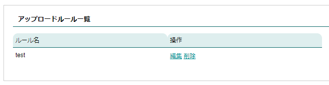
アップロードルール一覧 |
|
|---|---|
FTPアップロードルール設定にて保存したルールの一覧が表示されます。 「編集」を押すことにより、対象ルールがFTPアップロードルール設定のフォームに自動で入力されます。 「削除」を押すことにより、対象ルールが削除されます。 |
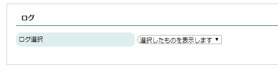
ログ |
|
|---|---|
項目 |
説明 |
ログ選択 |
ログ選択フォームから該当のログファイルを選択することにより、FTPアップロード機能のログの確 認が行えます。 本機能のログは対象ファイルの末尾数十行分のみとなります。 そのため、全内容を確認する場合にはサポートデータを取得しご確認ください。 |